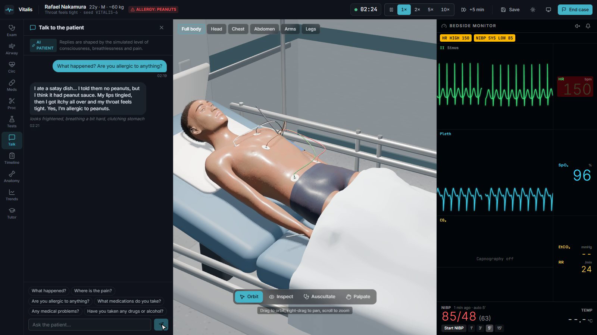
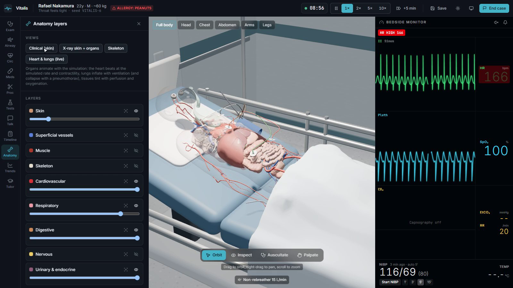

A real-time, procedurally generated 3D patient simulator for emergency medicine training
Educational simulation only. Vitalis is a teaching tool. It is not a medical device or clinical decision support, and its physiology has not been clinically validated.
Vitalis puts a student in a resuscitation bay with a patient whose body is simulated continuously. There is no decision tree and no scripted outcome. The student examines, monitors, tests and treats; the patient's circulation, breathing, blood chemistry and consciousness respond through modelled mechanisms; and the diagnosis stays hidden until the debrief. Every patient is generated from a seed, so a case can be replayed exactly.


To run it: npm install, copy .env.example to .env and add an OpenAI key (optional), then npm run dev. Without a key, every AI feature falls back to a scripted version.
| The patient arrives in a computed state | Each case defines when the illness began. The engine simulates the hours before arrival (up to 24 for diabetic ketoacidosis), so the arrival vital signs, blood results and appearance are outcomes of the model, not numbers typed in by an author. |
|---|---|
| Wrong treatment fails for the right reason | A tourniquet on the wrong leg does not stop the bleeding. Antihistamine alone does not reverse anaphylactic shock. Calcium protects the heart in high potassium but does not lower the level. Adrenaline injected into muscle works slowly in a patient with poor circulation. None of this is scripted; it follows from the mechanisms. |
| The AI cannot change the outcome | The language model only produces text. It is given what the patient could know or feel, never the diagnosis. Cases it writes must pass the simulator's own validator, and are sent back to the model with the errors if they do not. |
| What you see is the simulation | The monitor waveforms, breath sounds, chest movement, lip colour and the beating heart in the anatomy view are all drawn from the same simulated state, at the same moment. |
| Physiology engine | Written from scratch in TypeScript, running in a background thread at 10 steps per second. The mature engines (Pulse, BioGears, HumMod) are C++ or Java and have no browser build, so the engine sits behind an interface that a Pulse-backed server could replace. The circulation has two pumping sides: the left and right heart are solved together each step, which is why left heart failure floods the lungs, a collapsed lung under pressure stops blood returning to the heart, and blood loss lowers filling pressure. Low blood pressure with an organised heart rhythm (pulseless electrical activity) is not a programmed state. It emerges when the computed output is too low to produce a pulse. |
|---|---|
| Drug model | Each drug moves between compartments, crosses to its site of action with a delay, and acts on shared receptor channels. The body's own adrenaline and noradrenaline act on the same channels, so a beta-blocker hides the fast heart rate of blood loss, and an opioid plus a sedative stops breathing at doses that are safe separately. Naloxone competes with the opioid and wears off first, so the patient can relapse. |
| Determinism | The engine never uses the browser's random numbers. Every random event (a rhythm change, a failed cannulation, laboratory noise) comes from seeded generators whose state is saved with the case. The same seed and the same actions give an identical run, which the tests verify by comparing state hashes. |
| Tuning 14 interacting conditions | Because nothing is scripted, a change to one reflex shifts every case. Getting severe asthma to arrive breathless and fast, without making bleeding patients impossibly fast, needed the stress response and the blood pressure reflex to combine in the way they do in the body rather than simply adding up. |
| The 3D patient | The body is built per patient from an open-licence human model by blending sex, age, weight, muscle and height, then re-posed lying down. 191 anatomical structures from a separate dataset are fitted to each generated body and attached to its skeleton. Skin colour, sweat, rash, hair and clothing are generated in shaders, because no suitably licensed textures were available. |
The engine tests cover reproducibility, physical limits, treatment effects (right and wrong), drug behaviour, case validation, save and load. The browser tests drive the real interface through a full case on desktop and tablet, and confirm that treatment changes the patient: breathing recovers after naloxone, and a chest drain prevents the cardiac arrest that otherwise follows a collapsed lung under pressure.
React, TypeScript, Vite and Tailwind; Three.js through React Three Fiber; a Node server that keeps the OpenAI key off the browser; MakeHuman (CC0) and BodyParts3D (CC BY) assets. The physiology is simplified and unvalidated, and covers adults only. Several conditions are not modelled, including pulmonary embolism, stroke and cardiac tamponade. Anatomy placement is approximate.